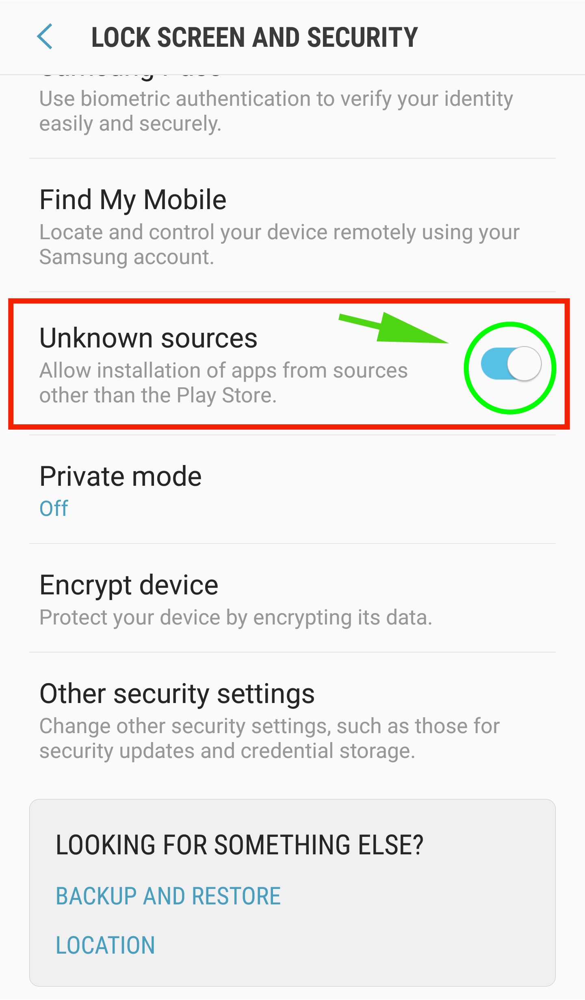
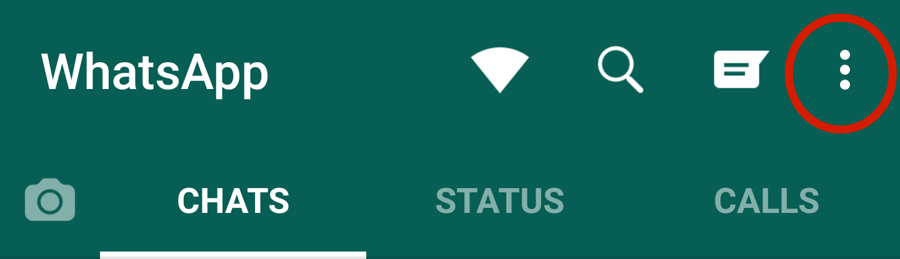
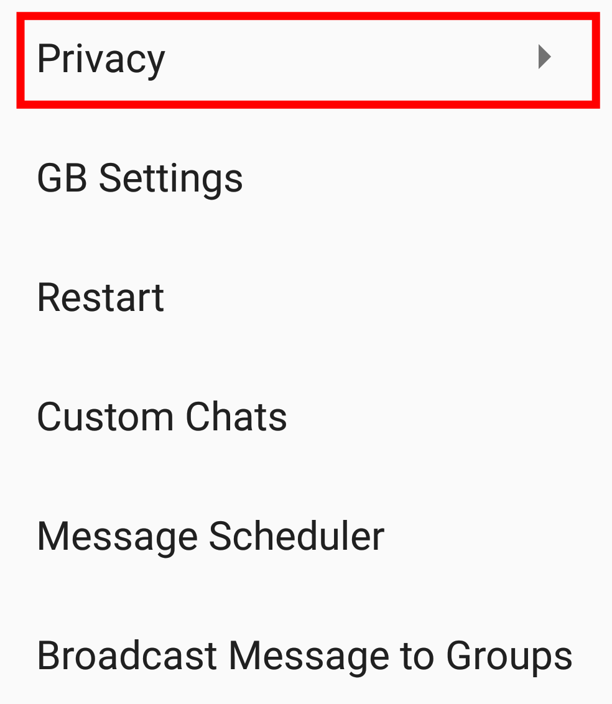
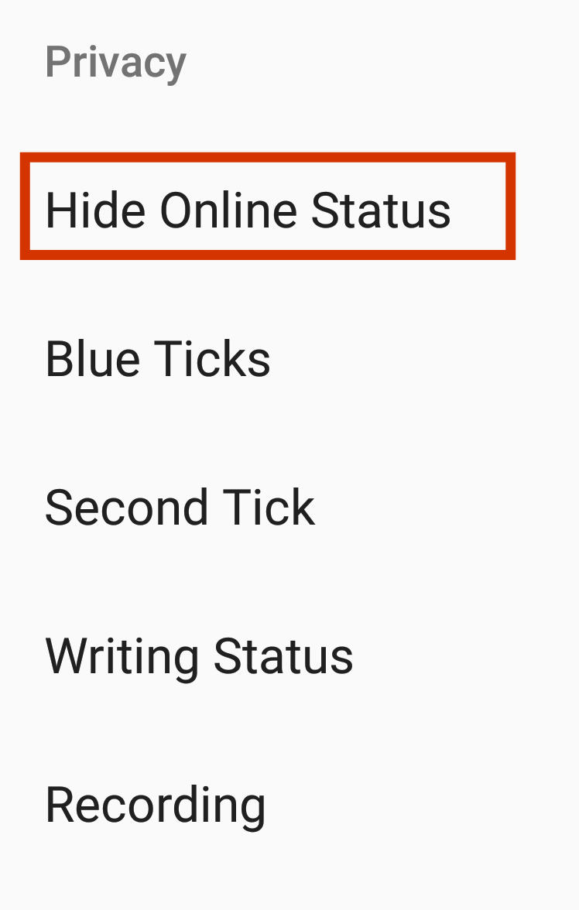

How To Hide Whatsapp Online Status While Chatting

WhatsApp Messenger is a freeware which allows the sending of text messages, voice calls, and video calls as well as images, audio, video and other media. WhatsApp Messenger is owned by Facebook. It is used worldwide and its use is still rapidly increasing because it's free of cost and provides instant messaging between two or more users. WhatsApp Messenger has a very high-security level as all WhatsApp messages, voice calls, and video calls are end-to-end encrypted. WhatsApp Messenger usually runs from a mobile device but it is also available on desktop computers. WhatsApp also has a business app named WhatsApp Business that enables companies to provide customer service to their users.
One of the most helpful functions of WhatsApp is the online status that tells all your contacts whether you are online at this time or not. This feature is also available in many other popular apps such as Facebook, Skype, Viber and IMO. All these apps are just like WhatsApp but the reason why WhatsApp is so popular is that WhatsApp was launched at a time when there was no competition and at that time people really needed it.
The online feature of Whatsapp is very useful but there are times when we don't want to be seen online by others. We've all been in such situations many times like when we try to avoid someone but they see us online on WhatsApp and there could be times when you just want to check your latest messages and not being disturbed by a lot of other messages. Being seen online at such times puts you in an unpleasant situation. So, is there a way you could hide your Online Status on WhatsApp? Sure, it's not a big deal as we are living in the 21st century, therefore, there is a solution to every problem and nothing is impossible.
Difference b/w Last Seen and Online
In this article we will take a look at how to hide WhatsApp online status while chatting but before starting let me clear the difference between last seen and being online on WhatsApp. Last seen is basically the last time you opened or used your Whatsapp irrespective of whether you are interacting with the application or not. If you have lost your connection as you opened WhatsApp and haven't even read your messages then this time will be considered as your last seen. Whereas if your account is marked as Online, this means that WhatsApp is running in the foreground of your device or is connected to the internet but this does not definitely mean that someone marked as online has read your message.
Requirements:
How To Hide Whatsapp Online Status While Chatting
Here's how to hide whatsapp online status while chatting:
1. Make Whatsapp Backup
First of all, you have to make WhatsApp Backup. If you don't know how to make WhatsApp Backup then you can see this elaborate guide on how to make WhatsApp Backup.
2. Uninstall WhatsApp from your Phone
Then you have to uninstall WhatsApp from your Phone. If you don't know how to uninstall WhatsApp from your Phone then you can see this elaborate guide on how to delete apps on Android.
3. Install GB WhatsApp
Download GB WhatsApp apk file. Before installing go to your Android Settings > Security > Enable Unknown Sources.

Locate the GB WhatsApp apk file on your Android phone and tap on it to install.
4. Open GB WhatsApp and hide online status
Open GB Whatsapp and register on GB Whatsapp with your mobile number on which you want to hide your online status. After registering on GB WhatsApp wait for a few minutes until WhatsApp is looking for chat backups on your phone and then tap on restore as you see it.
Now, tap on the menu button in the top-right corner.

Then you have to tap on Privacy.

At last, you have to tap on Hide Online Status.

That is all. You have succeeded in hiding your online status on WhatsApp. If you have any questions or queries regarding this article, feel free to ask us in the comments section. You can also contact us on Facebook.